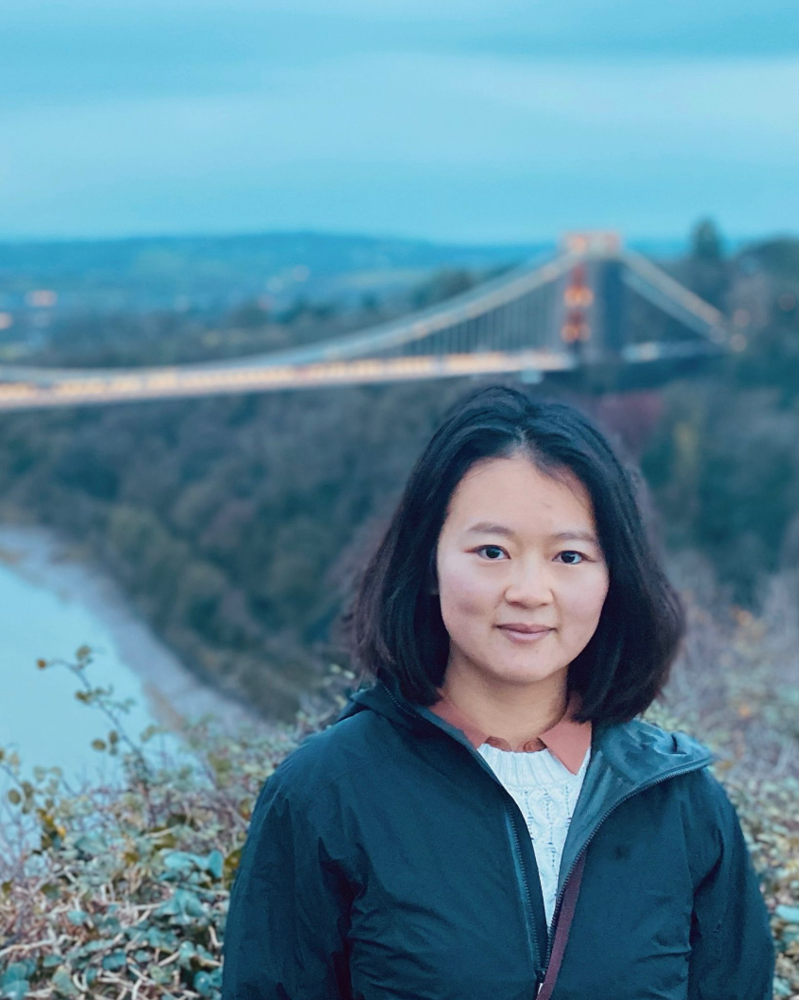

Xiaoyang Wang
Lecturer (Assistant Professor) in Artificial Intelligence
Innovation Centre, Office K1
Streatham Campus, Exeter, UK, EX4 4RN
New 2024 Entry
Funding opportunities for students/researchers
'New!' China Scholarship Council and University of
Exeter PhD Scholarships (Chinese Students)
NEWS!
I've been selected to join the 2023 cohort of EPSRC - Women's Engineering Society(WES) as an ambassador for women in engineering!
My research focuses on Machine Perception and Intelligence. Recent research efforts and interests are:
Other research interests include Explainable AI, e.g., neural-symbolic AI and human-AI interaction. I'm also working on AI for health.
I'm always looking for great students
that are interested in the above topics and the broader area of AI. Please feel free to get in touch!
TALKS
Deep Reinforcement Learning for Future Open RAN (September 15, 2021)
NG-CDI: Spotlight on the Future of Networks
Future Open RAN – Intelligence and Challenges (April 01, 2021)
SCEEM Research Conference, University of Bristol
See HERE.
PROJECTS
Playing with Alchemy: A Benchmark and Evaluation for Meta-RL
Funded by the
EPSRC Doctoral Training Partnership (DTP) Vacation Internships scheme, University of Bristol,
this project focuses on meta-reinforcement learning (Meta-RL),
one of the key enablers of cross-domain and cross-task intelligence. We investigate the effectiveness,
efficiency and stability of state-of-the-art Meta-RL methods,
including the model-agnostic meta-learning approach (MAML) (Finn, Chelsea, 2017), in the Alchemy, DeepMind environment.
We also explore the fast adaptation ability of reinforcement learning models from the training
domain to unseen tasks, through customized environments. A short project report is available HERE.
An EPSRC Prosperity Partnership project (2017-2023) working on creating an agile,
resilient network capable of meeting the future needs of our rapidly changing society. This project is a collaboration
between University of Bristol, University of Cambridge, Lancaster University, University of Surrey and BT.
Working with University of Bristol, our team focuses on deep reinforcement learning for future Open RAN (see a video),
digital twins (see a Tech talk from Prof. Robert Piechocki)
and dynamic environments (see a video).
Trajectory Prediction in Shared Spaces using Social force models
Predicting human trajectory in complex scenes is fundamentally
challenging due to the changing dynamics, agents' preferences and
navigation styles. Social force-based models have long been proposed to replicate
agent behaviours (e.g., pedestrians and cyclists) in continuous time and space.
We study the performance of SOTA social force-based models
for navigation prediction using the large-scale Stanford
Drone Dataset. We particularly focus on shared spaces - spatial zones
designed to be shared by different classes of agents, through interactive and non-interactive
behaviours.
Remote Sensing Target Detection and Tracking
My PhD project is about target detection and tracking in remote sensing images and videos using optimization methods.
Currently, my interests
are in using generative models and new architectures such as Transformers to perform target detection and tracking.
I'm working with Dr Yuhan Liu on this project.
PUBLICATIONS
Please refer to Google Scholar for my full list of publications.
Code available for the following:
Infrared small target detection via nonnegativity-constrained variational mode decomposition
Xiaoyang Wang, Zhenming Peng, Ping Zhang, and Yanmin He.
IEEE Geoscience and Remote Sensing Letters
[Code]
Infrared dim and small target detection based on stable
multisubspace learning in heterogeneous scenes
Xiaoyang Wang, Zhenming Peng, Dehui Kong, and Yanmin He.
IEEE Transactions on Geoscience and Remote Sensing
[Code]
Infrared dim target detection based on total variation
regularization and principal component pursuit
Xiaoyang Wang, Zhenming Peng, Dehui Kong, Ping Zhang, and Yanmin He.
Image and Vision Computing
[Code]
Infrared small dim target detection based on local
contrast combined with region saliency
Xiaoyang Wang, Peng Zhenming, Zhang Ping, et al.
High Power Laser and Particle Beams
[Code]
TEACHING
Before moving to Exeter, I partially taught EMAT31530: Introduction to Artificial Intelligence
(Fall 2020 and Spring 2021) at the University of Bristol. Teaching materials on Reinforcement Learning
are available upon request.
AWARDS
SCEEM Post-Pandemic Research Restart Events Scheme (SPPRRES) Fund, University of Bristol, 2022.
Grant value: £1,300
Engineering Faculty Post-Doctoral Research Prize, University of Bristol, 2021
Grant value: £5,000
Bristol Plus Award, University of Bristol, 2018
Huawei PhD Fellowship, 2017-2018
MISC
Professional Services:
Life outside of work...
(Watching) Road cycling occasionally ride a bike myself and hiking.
I contribute to a figure skater fan page of Boyang Jin (nickname "Tiantian"). Follow us on
Bilibili and
Weibo.
Inspiration from and thanks to Dr Kayvon Fatahalian's homepage
and Sebastin Santy's homepage